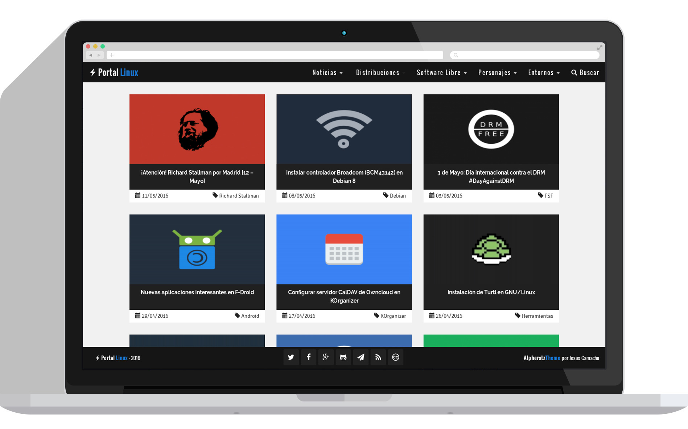
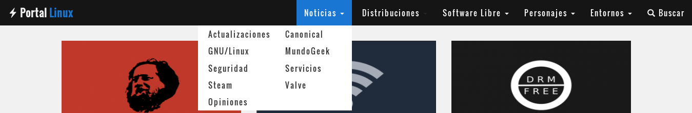
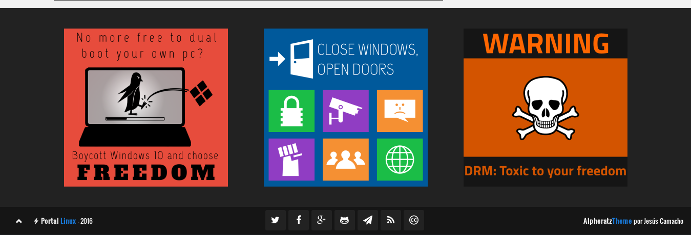

Alpheratz Theme para Wordpress

Alpheratz es una plantilla basada en Bootstrap, por lo que le hace ser una plantilla 100% responsive y adaptative. Se puede visualizar tanto en ordenador, como en tableta o smartphone. Actualmente está en una base beta de pruebas. Es una plantilla que utilizo en mi blog principal sobre GNU/Linux, Software Libre y otros temas de SysAdmin.
| Última versión | Fecha de publicación | Registro de cambios |
|---|---|---|
| Alpheratz Theme 07.5.1a | 3 de mayo 2016 | ChangeLog |
Características
- Sencillo tema con Flat design.
- Diseño adaptativo (responsive design) gracias a Bootstrap Framework.
- Compatible con los navegadores más usados (Firefox, Chrome/Chromium, Opera, Safari…).
- Barra lateral (excepto en home). Se puede configurar en la derecha o izquierda.
- Footer principal (donde se pueden añadir widgets) y footer secundario (donde se pueden añadir redes sociales)
- Optiones de tema (Nunki Engine).
- SEO: Amigable con los búscadores.
- Sin páginas, el contenido carga solo.
- Diferentes diseños a escoger (Aqua, Azul, Verde, Naranja, Lila, Rojo y Amarillo).
- Menú con doble columna.
- Compartir contenido con redes sociales.
Tecnologías usadas
- Bootstrap Framework.
- Theme Options Framework.
- Font Awesome Icons.
- Infinite Scroll.
- Google Fonts.
- Nunki Engine.
Paleta de colores
| AZUL | NEGRO | GRIS OSCURO | GRIS CLARO | BLANCO |
|---|---|---|---|---|
| #1976D2 | #151515 | #212121 | #A0A0A0 | #F0F0F0 |
Imágenes

{kind=link}
{kind=link}

Plugins recomendables
- Crayon Syntax Highlighter
- Easy Bootstrap Shortcode
- Stylish Popular Posts
- Yoast SEO
- NextScripts: Social Networks Auto-Poster
Licencia de la plantilla
Esta plantilla está bajo la licencia GPL 3.0, por lo tanto eres libre de usar la plantilla con cualquier propósito, de estudiar la plantilla y modificarla, de distribuir copias de la plantilla y por último, de mejorar la plantilla y hacer públicas esas mejoras para que la comunidad se beneficie y por supuesto bajo la misma licencia que la del autor principal.